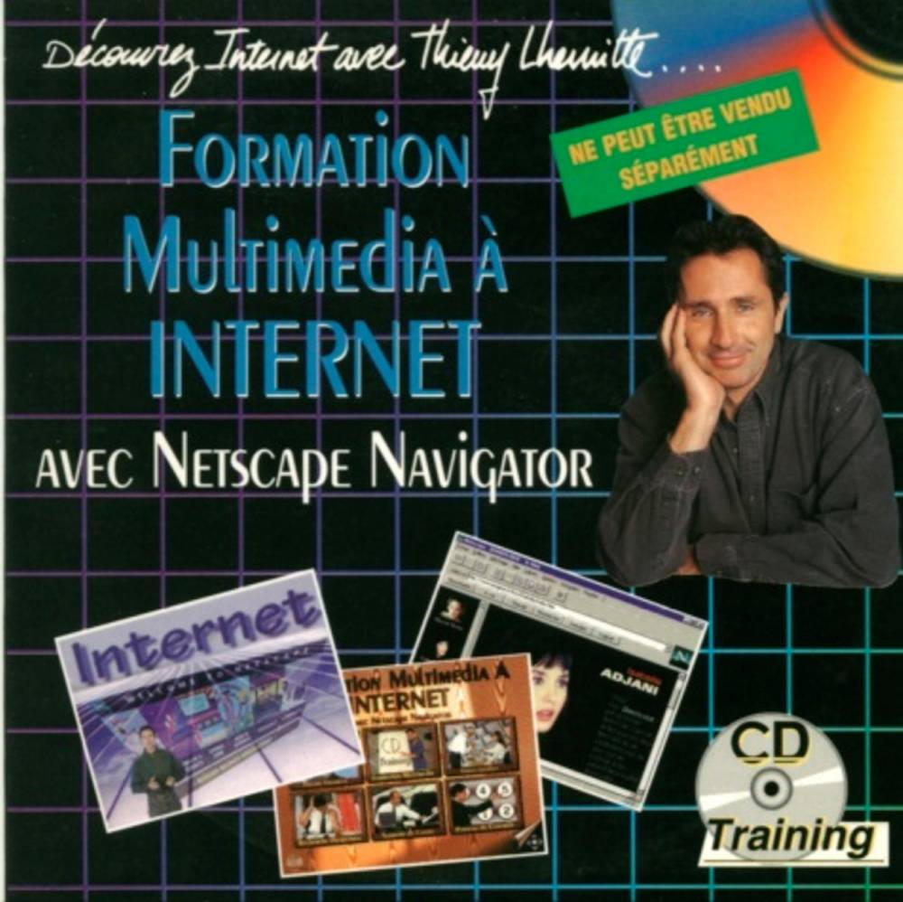

Tour d'horizon du développement web frontend
Tour d'horizon du développement web frontend
- Un peu d'histoire...
- Les débuts du web
- Et Javascript dans tout ça ?
- Le contexte frontend et ses particularités
- Présentation de Javascript
- Les spécificités du langage
- La norme ECMAScript
- Quelques "alternatives"
- Frameworks populaires
- React
- Angular
- Vue.js
- Javascript et le frontend du futur...
Rapide introduction
Un peu d'histoire....

Les débuts du web
- 1990 : HTTP/0.9 et HTML
- 1994-1995 : Sortie des premiers grands navigateurs, avec Netscape, IE, et première sortie de Javascript.
- 1996 : Arrivée de HTTP/1.0 et de CSS
- 1997 : La standardisation commence avec l'arrivée de HTTP/1.1 et du premier standard ECMAScript 1.0
- 1999 : Sortie d'ActiveX pour le web avec IE5. La « guerre des navigateurs » fait rage.
Et Javascript dans tout ça ?
- 1995 : Première sortie de JavaScript dans Netscape
- 1996 : Microsoft copie ça et intègre JScript à IE
- 1997 : Standardisation de Javascript par l'ECMA sous le standard ECMAScript 1.0
- 1998 : Sortie d'ECMAScript 2
- 1999 : Sortie d'ES3
- 2000 : Début des travaux sur ES4
- 2009 : Abandon d'ES4 et arrivée d'ES5
- 2015 : Arrivée d'ES6 : ES2015
- 2016 : Arrivée d'ES2016
- 2017 : Arrivée d'ES2017
- Et ainsi de suite...
Le contexte frontend et ses spécificités
Aucun contrôle sur l'environnement d'exécution
- L'utilisateur peut avoir un (très) vieux navigateur
- L'utilisateur peut avoir un navigateur du futur

On ne doit pas bloquer l'onglet
- Beaucoup de traitements chronophages et sur lesquels on n'a pas le contrôle (Appels réseau...)
- Nécessité de rendre la main au navigateur.
Pourquoi utiliser Javascript ?
- Originellement : modifier le DOM
- Effectuer des appels réseau (Ajax)
Qu'est-ce que c'est, Javascript ?
Les spécificités de Javascript
Langage interprété
Aspect « fonctionnel » inspiré de Scheme
Un langage asynchrone
Les promesses
Async/await
Évidemment, le fonctionnel et l'asynchrone marchent très bien ensemble...
Typage dynamique
Conversions implicites
Opérateur == particulier
Heureusement, on a ===
Orienté objets par prototype depuis toujours
Une approche aujourd'hui inhabituelle
Depuis ES2015, aussi orienté objets par classe
Quelle différence entre Javascript et ECMAScript ?
- ECMAScript est le standard derrière Javascript, qui n'en est qu'une implémentation (et une marque déposée par Oracle)
- C'est un des standards de l'ECMA : ECMA-262
- Une nouvelle spec sort chaque année depuis 2015
- C'est le TC39 qui se charge de la spécification de Javascript
- N'importe qui peut proposer une nouveauté dans ECMAScript
Comment arrivent les nouvelles fonctionnalités dans la spec ?
- Stage 0 : N'importe qui peut soumettre sa fonctionnalité
- Stage 1 : Un membre permanent du tc39 accepte la fonctionnalité
- Stage 2 : La spec est rédigée dans les grandes lignes
- Stage 3 : La spec est finalisée et revue
- Stage 4 : Les tests d'acceptation sont passés et la fonctionnalité est utilisée et on a un retour d'expérience.
Pourquoi il n'est plus nécessaire d'attendre longtemps avant d'utiliser les nouvelles fonctionnalités ?
- Les navigateurs anciens n'existent quasiment plus
- Babel

Babel, c'est (littéralement) le futur
- Permet de transpiler quasiment toutes les features d'ESNext vers ES5
- Supporte des plugins pour plein de trucs, y compris des proposals en stage 1 ou 2
- Transpile même des fonctionnalités qui n'ont pas pour vocation à être dans la spec (comme JSX)
Les autres Javascripts...


Les frameworks Javascript...
Le Javascript et le frontend de demain...
Les Progressive Web Apps (PWA)
- Comme des applications mobiles, mais en web
- Décentralisé
- Mal pris en charge chez Apple (étonnamment...)
- Super bien intégré dans les principaux frameworks frontend
Les utilités multiples de Javascript...
Depuis les années, Javascript peut être utilisé pour bien plus de choses que du frontend...
Développement web backend


Applications mobiles


Applications desktop

De l'embarqué

Merci de m'avoir écouté !
Des questions ?
Vous pouvez retrouver la présentation sur https://yanbuatois.github.io/worksession-mars-2022/